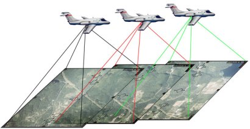

Definición
La fotogrametría es una técnica para determinar las propiedades geométricas de los objetos y las situaciones espaciales a partir de imágenes fotográficas. Puede ser de corto o largo alcance. La palabra fotogrametría deriva del vocablo "fotograma" (de "phos", "photós", luz, y "gramma", trazado, dibujo), como algo listo, disponible (una foto), y "metrón", medir. Por lo que resulta que el concepto de fotogrametría es: "medir sobre fotos". Si trabajamos con una foto podemos obtener información en primera instancia de la geometría del objeto, es decir, información bidimensional. Si trabajamos con dos fotos, en la zona común a éstas (zona de solape), podremos tener visión estereoscópica; o dicho de otro modo, información tridimensional. Básicamente, es una técnica de medición de coordenadas 3D, también llamada captura de movimiento, que utiliza fotografías u otros sistemas de percepción remota junto con puntos de referencia topográficos sobre el terreno, como medio fundamental para la medición.
